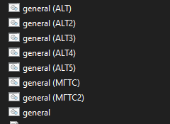
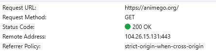

Как то так
ркн давно анимешные онлайн кинотеатры банит да и не только их, шикимори тоже забанили
Ну тут массово отлетело большинство популярных сервисов, а не точечный блок некоторых
Ваще пабую.
Автохостлист справился без моего вмешательства.
По жалобам правообладателей. Тут цензура не при чем.
Шики как был доступен, так и остается. Забанили его домен org, и то очень давно.
У меня теперь и за ркн проблема до этого смотрел без прокси аниме потому сервер расположен в Нидерландах и там почему то просмотр аниме запрещён щас сижу и думаю
Из германии проблем нет
С Германии animego.org тоже не доступен
Доступен
Недоступен из Нидерландов, Франции, США, Канады.
Доступен из Финляндии (хотя, в whois organisation DE, т.к. Hetzner, но физически country FI).
Но этого геоблок самого ddos-guard.
В Нидерландах много чего запрещено. Торренты запрещены, видео на ютубе загеоблочены, музыка на спотифай загеоблочена, и т.д. Наверное, самое худшее место для хостинга впн.
Да, стало открываться, не работало на момент написания поста
анилиб пока что жив вроде 
Ответ на вопрос почему, да они настолько не палятся.
Никогда не поверю что они так конкурентов убирают. Они просто изначально ненавидели аниму.
Ютуб также убирали - монополия штука вкусная
иронично как шикимори прогибались прогибались да все равно не помогло. В 22-м помню их уже блокировали, потом разблокировали (после этого заметил что например на странице тетради смерти теперь плашка что запрещенный материал, обсуждение закрыто), а щас вон оно что
Не нужно изобретать сложных объяснений, когда есть простое - просто решили хайпануть.
перестало заходить на animego. После блокировки добавил animego.org текстовый файл запрета он зафурчал а сегодня снова откинулся, подскажите что можно придумать? Может еще адрес есть?
Попробуйте другую стратегию обхода. У меня была такая ситуация, что например дискорд и ютуб работают на одном варианте стратегии обхода, и на этом-же варианте при этом не грузит например сайты с аниме или даже этот форум если я их добавляю в обход.
а не могли бы конкретнее объяснить, я нуб по поводу всего этого. скачал готовый запрет. просто добавлял необходимые сайты в текстовый документ
Ну вот скачиваете последнюю версию zapret discord youtube.
Разархивируете куда хотите. У вас будет там несколько bat-файлов.

Нас интересуют вот эти. Везде где есть general. Это разные стратегии обхода, разные конфигурации они собой представляют. Зависит конкретно от вашего провайдера и много чего ещё, но по идее хоть один из них должен у вас исправно работать и обходить блокировки.
Список сайтов, для которых производится обход блокировки находится в файле list-general
Файл находится в этой-же папке.
По дефолту у вас там уже будут некоторые сайты, вы можете вписывать туда свои любые. Вписывать свои сайты туда нужно чётко с новой строки каждый сайт. И без https://, вообщем по тому принципу, по которому уже туда записаны сайты.
После добавления сайтов нужных вам, можете начинать тестирование. Запускаете любой из файлов из этих вот, где есть general, обязательно от имени администратора, и смотрите грузятся-ли сайты. Если нет - закрываете программу и запускаете точно так-же другую конфигурацию.
На каких-то вариантах обхода одни сайты могут работать, а другие нет. На других вариантах может, например, ничего не работать, и так далее. Тут вам нужно самим всё тестировать и проверять, тут я уж ничем не помогу.
P.S. - Надеюсь достаточно конкретно объяснил).
Крайне подозрительная ссылка. Почему бы просто не сказать YTDisBystro от KDS?
у меня этот сайт вообще 504 - Gateway Timeout выдаёт. Если они сами дают отлуп российским айпи, то тут только впн поможет
Из Нидерланд не открывается (видимо там не любят пиратское аниме), из Германии и Украины норм
За ссылку извиняюсь 
Просто хотел сделать красиво).
Но вообще имел в виду не YTDisBystro, а именно zapret-discord-youtube: Releases · Flowseal/zapret-discord-youtube · GitHub
Тоже 504. Но вообще как я понял - он достаточно часто лежит.
Я лично смотрю только с сабами, и, если надо посмотреть онлайн - то смотрю тут - https://animejoy.site/
Может кому пригодится =)
Через ВПН открывается. Выглядит так будто они сами ру-айпи блочат
А какая стратегия сработала? У меня в автохотлист тоже залетел сайт, но всё равно не открывается. Только через цензорити, но там нидерладское прокси и видео не открывабтся
у меня сайт открылся с альтернативным айпишником в hosts
С тем, что по умолчанию ведет на ddos-guard - да, ошибка 504
видео тоже работают
будь человеком , не жадись и нам маленько сахарку отсыпь (с)
А какой днс его выдал?)
никакой.
я не очень хочу этого делать по той причине, что это может быть не безопасно. поэтому оставлю сайт, чтобы могли пользоваться самостоятельно (хотя я его уже выкладывал в августе вроде)
https://otx.alienvault.com/ в поиск нужно ввести домен, далее думаю, разберетесь.
просто тыкнул рандомный из списка для cloudflare
104.26.15.131 animego.org
используйте на свой страх и риск
ну и помимо хостс еще нужно добавить в обход запрета
Спасибо) пригодится, наверное
Странно, что у тебя заработало. Мне клаудфлайр 504 даёт. И неважно какой альтернативный адрес - любой возвращает одно и то же.
Там сам сайт походу лежит уже давно.
блин вот я прям щас проверил, у меня работает. убедись, что у тебя ip применился
тебе в f12 этот айпи отдает 504? почти уверен, что по прежнему лезешь на ddos гуард этот ркшный

Ахахах, ну конечно, как иначе. У меня же нет высшего технического и 15 лет стажа за плечами. Я же никогда не занимался таким, откуда же мне знать 
А если серьезно, то возвращает стандартную клаудфлайровскую заглушку 504 с адресом из их подсети. Хост работает, адрес при запросе ходит верно. Но увы.
{kind=link}
Может у клауда какой-то геобан. Там еще имеются адреса хетцнера, может их потыкать.
попробуй dns 1.1.1.1 прописать . у меня они на роутере указаны (открываю в хроме без doh). но тут уже мои полномочия все
я потыкал, не фурычит
Днс я давно глобально с дохой в системе прописал. Иначе бы на клауд не ходило.
Всё, разобрался.
Все-таки не все адреса, что выдает алиен работают. Предполагаю, всё же геолокация или маршруты. Заработал адрес почти с самого конца списка, там и пинг ниже.
Хетцнер мертвый весь.
но я сайт отрыл где-то в недрах интернета рандомно
просто когда ipfinder от ори ничего не находит, то приходится к нему обращаться. но там много лишнего перечислено и 90% да - не работает.
Там, как я понял, просто собрана инфа по резолверам, где идет эта запись доменного имени.
Вот никогда бы не подумал, что в век таких безумных технологий придется собирать собственный хостлист, чтобы нормально ходить в сеть. Напоминает фидошную эпоху, где ребята друг-другу адреса на бумажках писали и в письмах по почте пересылали.